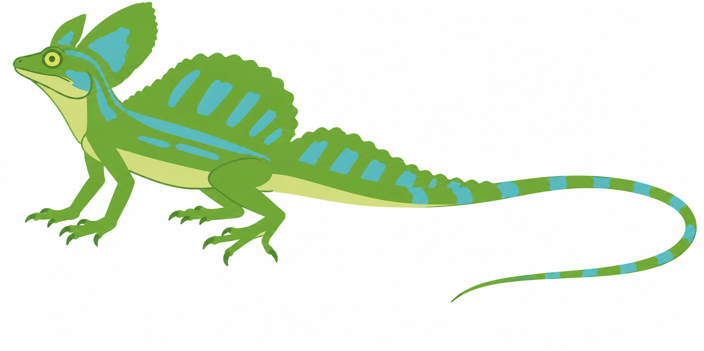

Produktionsansicht mit Motivspoiler. Technische Zertifizierung, Motivqualität und redaktionelle Freigabe sind getrennt. Motiv-/Spielabnahme: offen.
Quelle: stirnlappenbasilisk-ma-r02 · Datei: MA-r02.png
Original SHA-256: 9468fb1b5a883bd550026c08f718732a44c7fbf8d9b2cd006a08e348cc7d9928
Normalisiert SHA-256: 1d3b8acbc8c90e1e89b9b4be3643ab73182496522033b033e1cb6181a0081462

{'alpha_below': 128, 'background': '#ffffff', 'briefing': 'Approved exact MA-r02; user prefers prior safe-3 aesthetics. Preserve faithful identity, both head lobes, sails, four-leg pose, full long tail and negative spaces. Fixed50x25, three-color palette, area/exact; no singleton foreground colors, no distortion or frame-pass decoration.', 'crop': [28, 0, 1772, 872], 'fit': 'exact', 'format': 'picross-image-design-v1', 'height': 25, 'mode': 'color', 'origin': 'Proposed native MA-r02 abstraction/edit from approved own reveal A-r01, with approved MA-r01 as supporting edit target.', 'palette': [{'id': 'green', 'rgb': '#6aa633'}, {'id': 'light', 'rgb': '#d3dc85'}, {'id': 'turquoise', 'rgb': '#53babb'}], 'rights': 'New AI illustration generated for this user from own approved reveal; no foreign image assets.', 'source_id': 'stirnlappenbasilisk-ma-r02', 'variants': [{'id': 'area', 'method': 'area', 'threshold': 128}], 'width': 50, 'working_mode': 'faithful'}
{'format': 'PNG', 'source_size': [1774, 887], 'source_mode': 'RGB', 'orientation': 1, 'normalized_size': [1774, 887], 'color_treatment': 'untagged/sRGB RGB or gray interpreted as sRGB', 'icc_sha256': None, 'alpha': 'preserved, composited against design background only during rasterization'}
{'tool': 'rp3-image-1', 'pillow': '12.3.0', 'jpeg': '8.0', 'jpeg_turbo': '3.1.4.1', 'littlecms': '2.19', 'zlib': '1.3.1.zlib-ng'}
{'status': 'stalled', 'proof_verified': True, 'certified': False, 'logic_hash': '0d9287ce5ab85bbcd29b09dc863c3224d37a2e6942c79e1ebc6a4b4831e79132', 'profile': {'id': 'full-line-color', 'version': 1, 'start': 'unknown', 'deduction': 'all-line-supported-values', 'search': False}, 'profile_hash': 'f63ee6c88e6baa9f6a22f386ae532482d7ffb7b9a2237867f0d7cd9960ab608f', 'steps': 227, 'line_evaluations': 302, 'elapsed_seconds': 0.10152699999889592}
Kandidat: ab88acb84788e3f414bfceba9291810e9c0442bddd0ab1402e637f53601a2dd0
{'id': 'area', 'method': 'area', 'threshold': 128}
| Linie | Vollständige Hinweise (Länge:Farb-ID) |
|---|---|
| 1 | 1:light 1:green |
| 2 | 3:light 3:green 1:light |
| 3 | 2:green 1:light 1:green 1:turquoise 2:green 1:light |
| 4 | 1:light 3:green 2:turquoise 2:green |
| 5 | 1:light 6:green 1:turquoise 1:green 1:light 1:light 4:green 1:light |
| 6 | 2:light 1:green 2:turquoise 2:green 1:light 8:green |
| 7 | 3:light 1:turquoise 1:green 1:light 1:light 2:green 1:turquoise 1:green 2:turquoise 4:green |
| 8 | 2:light 1:green 1:turquoise 7:green 1:turquoise 1:green 2:turquoise 2:green 1:light |
| 9 | 2:light 3:green 1:turquoise 6:green 1:turquoise 1:green 1:turquoise 1:green 1:light |
| 10 | 1:light 6:green 3:turquoise 3:green 1:turquoise 2:green 5:light |
| 11 | 1:light 6:green 4:turquoise 6:green 1:turquoise 3:green 1:light |
| 12 | 1:light 2:green 2:light 11:green 1:turquoise 2:green 1:turquoise 3:green |
| 13 | 1:light 3:green 5:light 11:green 2:turquoise 1:green 1:turquoise 1:green 1:light |
| 14 | 1:green 2:light 1:green 3:light 4:green 5:light 5:green 1:turquoise 3:green 1:turquoise 2:green 2:turquoise 2:green 1:turquoise 2:light 1:turquoise 1:light 1:green 1:turquoise 1:light |
| 15 | 1:light 1:green 1:green 1:light 1:light 3:green 1:light 5:light 2:green 1:turquoise 2:green 1:turquoise 3:light 1:light 1:turquoise |
| 16 | 1:light 3:green 1:green 1:light 3:green 2:light 1:green 1:light 2:light |
| 17 | 2:light 2:green 1:light 2:light 2:green 1:light 1:light |
| 18 | 1:light 1:light 2:light 1:green 2:light 1:light |
| 19 | 1:light 1:light 1:light 1:turquoise 1:light |
| 20 | 4:light 1:turquoise 2:light |
| 21 | 4:light |
| 22 | – |
| 23 | – |
| 24 | – |
| 25 | – |
| Linie | Vollständige Hinweise (Länge:Farb-ID) |
|---|---|
| 1 | 1:light |
| 2 | 1:green 1:light 1:light |
| 3 | 1:light 1:green 2:light 1:green |
| 4 | 4:green 2:light 1:green 1:light |
| 5 | 1:light 3:green 1:turquoise 4:light 1:light 1:green 2:light |
| 6 | 2:light 2:green 2:turquoise 1:green 1:light 1:green 3:light 2:green 1:green |
| 7 | 1:light 1:green 1:turquoise 3:green 1:turquoise 5:green 1:light 1:green 1:light |
| 8 | 1:green 3:turquoise 1:green 1:light 6:green 1:light 2:green 1:light |
| 9 | 1:light 4:green 1:light 4:green 1:light 2:green 1:light |
| 10 | 4:green 1:light 1:light 1:green 1:turquoise 2:green 2:light |
| 11 | 2:light 6:green 1:light |
| 12 | 4:green 1:turquoise 2:green 2:light |
| 13 | 1:light 1:green 1:turquoise 2:green 2:turquoise 1:green 2:light 1:light |
| 14 | 5:green 2:turquoise 1:green 2:light 1:green |
| 15 | 2:green 2:turquoise 2:green 1:turquoise 3:green 1:light 1:green 1:light |
| 16 | 2:green 1:turquoise 3:green 1:turquoise 5:green 3:light |
| 17 | 3:green 2:turquoise 6:green 2:light 1:green |
| 18 | 1:light 2:green 1:turquoise 1:green 1:turquoise 5:green 1:light 1:green 1:light |
| 19 | 3:green 1:turquoise 4:green 2:light 2:green 2:light |
| 20 | 7:green 1:light 2:light |
| 21 | 3:light 3:green 1:light |
| 22 | 1:light 1:green 1:turquoise 1:green 1:light |
| 23 | 1:light 1:turquoise 2:green 2:light |
| 24 | 1:light 4:green 1:light |
| 25 | 1:light 1:green 1:turquoise 2:green 1:light |
| 26 | 2:green 1:turquoise 1:green 1:light |
| 27 | 1:light 1:green 1:turquoise 1:green 1:light |
| 28 | 4:green |
| 29 | 2:turquoise 1:green |
| 30 | 2:green 1:turquoise |
| 31 | 1:light 2:green |
| 32 | 2:green |
| 33 | 2:turquoise |
| 34 | 1:green 1:light |
| 35 | 1:green 1:light 1:light |
| 36 | 1:turquoise 1:light 1:light |
| 37 | 1:turquoise 1:light |
| 38 | 1:green 1:light |
| 39 | 1:green |
| 40 | 1:turquoise |
| 41 | 1:light 1:light |
| 42 | 1:light 1:light |
| 43 | 1:turquoise 1:light |
| 44 | 1:light 1:light |
| 45 | 1:green 1:turquoise |
| 46 | 1:turquoise 1:light |
| 47 | 2:light 2:light |
| 48 | 1:turquoise 1:turquoise |
| 49 | 1:light 2:light |
| 50 | 2:light |